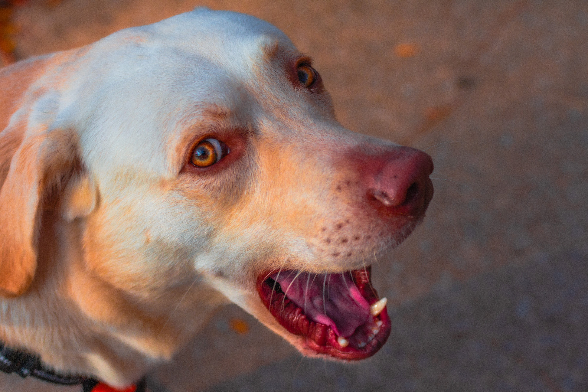

A simple project to show I pay attention in lab.
My interest in media is to display what subjects captured my attention. I often travel a lot and I witness events that I feel others around me should get to see. I carry a camera as it allows me to document my life, but also tap into my creative mind where I can tune photos and videos into my artistic vision. Along with learning how to use a camera and fine-tuning my skills in editing software, I enjoy capturing moments that speak to me which leads to me not having a niche for the type of photography I do. This philosophy keeps me open to new experiences instead of specifically finding "that" moment. Any moment can be special if you are willing to keep an open mind.
My photography account! If you're interested.


View my second class photo!!!!
View my depth of field photos!!!!